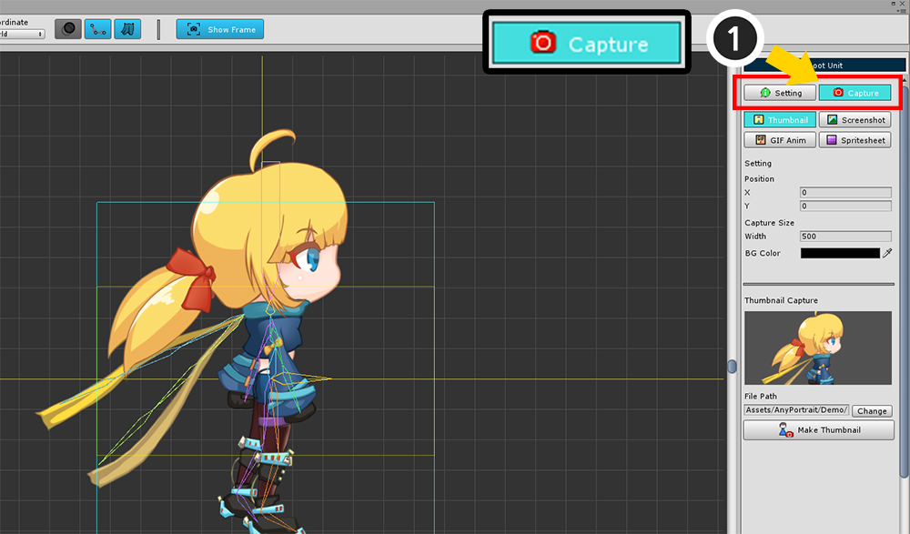
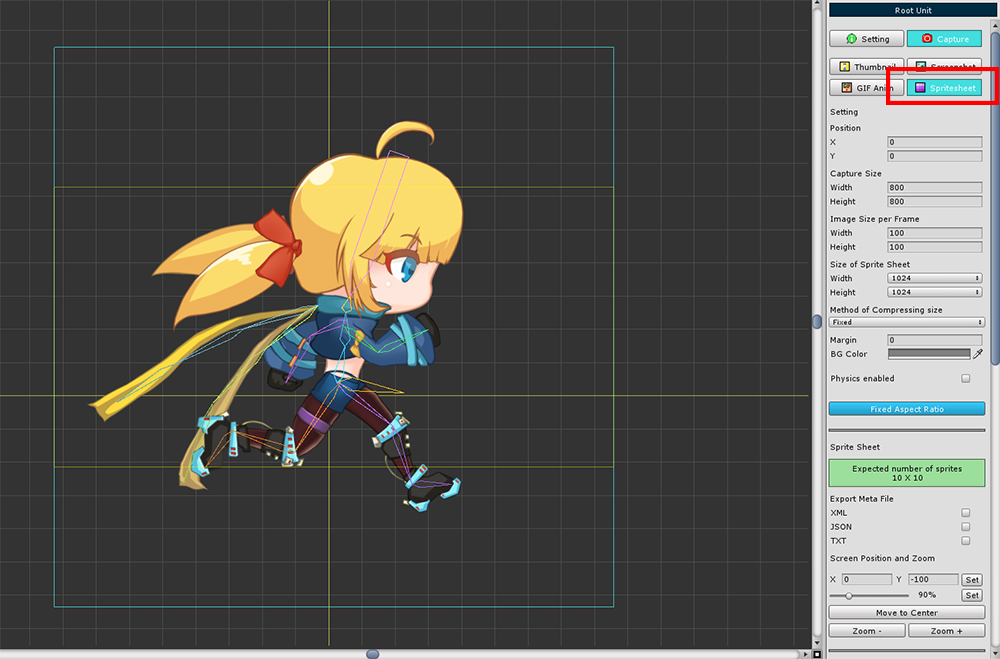
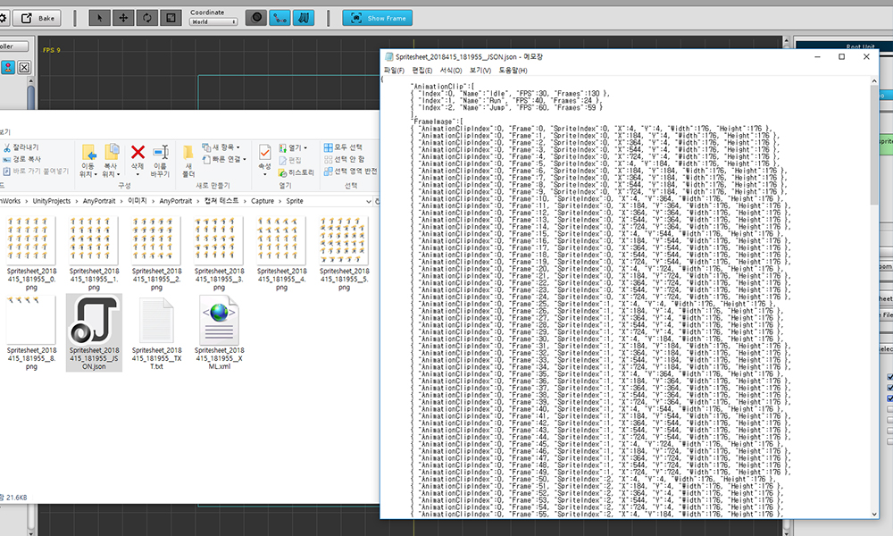
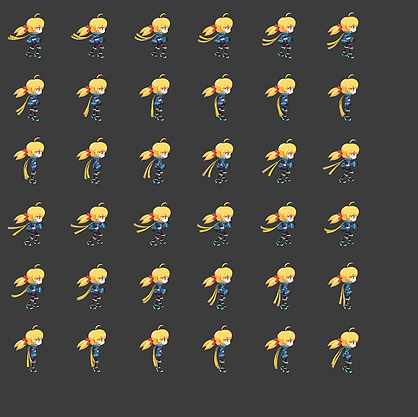
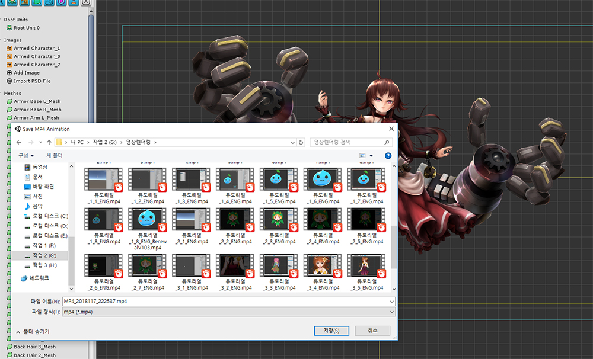

AnyPortrait > Manual > Screen capture
Screen capture
1.1.2
With AnyPortrait, it is possible to capture the screen directly.
Since it is not a professional capture tool, it is recommended to use it as a shared purpose (eg SNS).
Screen capture has been improved since version 1.0.3, and this feature is also supported in Mac OSX.
You can see the changes on this page.

To use the screen capture function,
(1) Select Root Unit.
Press the (2) Show Frame button to view the area where the screen is captured. (It is on by default.)

On the right screen, select (1) Capture tab.
Four screen capture tools are available.
Thumbnail : Capture the thumbnails used in the first screen of the AnyPortrait editor.
Screenshot : Save the screenshot image as a file.
GIF Anim : Select the animation and save it as a GIF animation file.
Spritesheet : Select animations and save them as a Sprite Sheet or Sequence Image.
Create a Thumbnail

This is a screen where you can create a thumbnail.
1. Capture area : Area to be saved as image. The area where the yellow rectangle is stored as a thumbnail.
2. Four Capture tools : Four tools for screen capture. In this case, select Thumbnail.
3. Capture area position : You can move the capture area. The default is (0, 0).
4. Capture Area Width and Background Color : You can set the capture area width and background color. When you set the width, the height is automatically assigned.
5. Thumbnail preview : You can view the thumbnail.
6. Save Path : Specify the path where the thumbnail is saved. The file must be located under the Assets folder.
7. Make Thumbnail : This button is used to create a thumbnail.

Set (1) the position, size and background color of the capture area.
(2) Press the Change button to set the file path to save the thumbnail image. The file must be located in the Assets folder.
(3) Click the Make Thumbnail button to create a thumbnail.

You can see immediately when the thumbnail is saved.

The saved thumbnail appears when you launch the editor and select a character.
Thumbnails are useful when you have a lot of characters.
Save a Screenshot

This function saves the current screen as an image file.
The screen composition is similar to the thumbnail tool.
The capture area is a light blue square on the screen.
Select (1) the Screenshot tool.
Set (2) the position and size of the capture area.
(3) Select the size and background color of the image to be saved.
(4) When Fixed Aspect Ratio is activated, the width-to-height ratio remains constant and the ratio of the captured area to the image size becomes the same.

(1) Press the Take a Screenshot button to save the image.
(2) The storage location may be outside the Assets folder.

When the image is saved, it automatically opens the saved folder and image.
Save a Screenshot - Select an animation to capture the screen

After selecting another animation, let's capture the screen by specifying the frame to save.
(1) Move to Setting tab.
(2) Select the animation.
(3) Use the slider to move to the frame you want to save.

(4) Select the Capture tab again.
(5) Press the Take a Screenshot button to save the image.

The animation pose can be captured and saved as above.
Save a GIF Animation

It is a way to save animations in a GIF file format that can be played.
If you select GIF Anim (GIF Animation) tool, various settings will appear as above.
1. Position of capture area
2. Size of capture area
3. Size and background color of the image
4. Whether to apply physics
: By default, the Physics modifier is off when you capture the screen. When this function is checked, the screen is captured with the Physics modifier applied.
5. Fixed Aspect Ratio
6. Selected animation name
: The name of the animation you want to save as a GIF file appears.
7. Set the position of the screen focus and the zoom ratio
: You can specify the focus of the screen separately from the capture area. You can control directly from this setting, not by dragging the mouse wheel or scrolling the wheel. Enter the value and press the Set button.
8. Move to Center button, Zoom button
: You can move the focus to the center of the screen or zoom in and out.
9. GIF Quality, Loop Count
You can specify the compression quality of the GIF image from 0 to 100. Higher quality means more storage and longer storage time.
Capture the number of repetitions when capturing GIF animation. At least one value. (The GIF file's own setting has a value of "Infinite Repeat".)
10. Take a GIF Animation button
Save GIF animations.
11. Animation Clips
You can select the animation clip you want to save.


Let's create a GIF animation with the existing settings kept.
(1) Select animation.
(2) Press the Take a GIF Animation button.

The animations are running simultaneously to capture the GIF animation.
You can check the progress while the animation is being captured.
Caution
In this state, you should not control the window position or size of AnyPortrait or select any other menu or function.
It does not matter if you run other external programs.

You can see the completed GIF animation file.
Save Sprite Sheets

Each frame of an animation is made into an image, and a combination of images is called a Sprite Sheet.
Sprite sheets are assets that are often used in Unity as well as other 2D game engines.
Starting with AnyPortrait v1.0.3, sprite sheet saving function has been added.
If you select the Sprite Sheet tool, you can see a lot of settings.
1. Image Size per Frame
: The image size of each frame of the sprite.
2. Size of Sprite Sheet
: The size of the entire sprite sheet image. Can be specified in exponential size of 2.
3. Method of Compressing size
: Sprite frame size compression method. The default, Fixed, uses the frame size specified above. The Compressed method analyzes the image to set a slightly more cropped image to the frame size. The compressed image size is applied in common between frames of the same animation.
4. Margin, BG Color, Physics Enabled
: The space(Pixel) between each frame. You can set background color and physics as well as save GIF animation.
5. Expected Sprite Information
: Analyzes the image size of the sprite to see how many frames it will contain in one sprite sheet. If you save in "Compressed" method, it may contain more frames than you expect.
6. Export Meta File
: You can decide whether to save a metafile that contains information from the sprite sheet. The file formats are XML, JSON, and TXT. You can select more than one.
7. Screen focus and Zoom
8. Export Sprite Sheets
: A button to save as a sprite sheet.
9. Export Sequence Files
: Save frame images as separate image files, without merging them into a sprite sheet. Metafiles are stored in the same way, but the contents are slightly different.
10. Animation Clips
: You can select the animation clip you want to save. Multiple animations can be selected.


How to create a sprite sheet.
(1) Set the frame size.
(2) Set the size of the sprite sheet. We recommend the largest size allowed by your development environment.
(3) Size Determines the compression method. Compressed is recommended for small capacity, but you should check the metafile.
(4) Set margins and background color. It is recommended that you decide the background color to suit your development environment. I set the transparency color here.

As described above, this is how to export the sprite sheet.
(1) Select the metafile to save as. Choose it for your development environment.
(2) Select animations to save.
(3) Press Export button. Depending on the type of file you need, either a sprite sheet or a sequence file.
The finished sprite sheet.
The image and folder are automatically launched.
You can see that each frame is stored in several image files.

When you open the metafile, you can see the information of the saved animation, the frame size and location information.
XML, and JSON were written for actual use, and the TXT format was written in an easy-to-understand way.
Save Sprite Sheets - Save as Sequence Images
If you press the Export Sequence Files button in the above procedure, the frames will be saved as individual images.

You can see that all frames are saved as individual images.
Frame sizes and metafiles are created in the same way as sprite sheets.
Save Sprite Sheets - Comparison of compression methods
Size The result of the sprite sheet varies depending on the compression method.
The differences are as follows.

The left is Fixed and the right is Compressed.
The Fixed method configures the sprite sheet to the set frame size.
In the Compressed approach, the image is analyzed based on the frame size and the sprite sheet is constructed by cropping to minimize margins.
Depending on the image, you can include more frames in the sprite sheet, which is optimal.
The size of the frame is stored in the metafile.
Even in the compressed format, frames of the same animation have the same size, so that not all margins disappear completely.
Save Sprite Sheets - Structure of Metafile
1. XML
1) Sprite Sheet
<?xml version="1.0" encoding="utf-8" standalone="yes"?>
<Content>
<AnimationClip>
<Clip Index="0" Name="Idle" FPS="30" Frames="130" />
<Clip Index="1" Name="Run" FPS="40" Frames="24" />
<Clip Index="2" Name="Jump" FPS="60" Frames="59" />
</AnimationClip>
<FrameImage>
<Image AnimationClipIndex="0" Frame="0" SpriteIndex="0" X="4" Y="4" Width="200" Height="200" />
<Image AnimationClipIndex="0" Frame="1" SpriteIndex="0" X="208" Y="4" Width="200" Height="200" />
<Image AnimationClipIndex="0" Frame="2" SpriteIndex="0" X="412" Y="4" Width="200" Height="200" />
<Image AnimationClipIndex="0" Frame="3" SpriteIndex="0" X="616" Y="4" Width="200" Height="200" />
<Image AnimationClipIndex="0" Frame="4" SpriteIndex="0" X="820" Y="4" Width="200" Height="200" />
....
</FrameImage>
</Content>
<Content> : Root node
<AnimationClip> : Group node containing animation clip information
<Clip> : Node for each animation clip
- Index : Index of animation clip node
- Name : Name of animation clip
- FPS : FPS(Frame Per Second) of animation
- Frames : Frame in the animation
<FrameImage> : Group node containing frame images
<Image> : Node for each frame image
- AnimationClipIndex : Index that the frame represents in which animation. Meaning the Index of the Clip node
- Frame : Frame in animation (start is 0)
- SpriteIndex : Index of saved image files (starting at 0) if multiple sprite sheet files were created.
- X, Y, Width, Height : Position and size of frame (in pixels)
2) Sequence file
<?xml version="1.0" encoding="utf-8" standalone="yes"?>
<Content>
<AnimationClip>
<Clip Index="0" Name="Idle" FPS="30" Frames="130" />
<Clip Index="1" Name="Run" FPS="40" Frames="24" />
<Clip Index="2" Name="Jump" FPS="60" Frames="59" />
</AnimationClip>
<FrameImage>
<Image AnimationClipIndex="0" Frame="0" FileName="Sequence_2018415_182230_Idle__0.png" />
<Image AnimationClipIndex="0" Frame="1" FileName="Sequence_2018415_182230_Idle__1.png" />
<Image AnimationClipIndex="0" Frame="2" FileName="Sequence_2018415_182230_Idle__2.png" />
....
</FrameImage>
</Content>
<Content> : Root node
<AnimationClip> : Group node containing animation clip information
<Clip> : Node for each animation clip
- Index : Index of animation clip node
- Name : Name of animation clip
- FPS : FPS(Frame Per Second) of animation
- Frames : Frame in the animation
<FrameImage> : Group node containing frame images
<Image> : Node for each frame image
- AnimationClipIndex : Index that the frame represents in which animation. Meaning the Index of the Clip node
- Frame : Frame in animation (start is 0)
- FileName : Sequence image file name of frame image
2. JSON
1) Sprite Sheet
{
"AnimationClip":[
{ "Index":0, "Name":"Idle", "FPS":30, "Frames":130 },
{ "Index":1, "Name":"Run", "FPS":40, "Frames":24 },
{ "Index":2, "Name":"Jump", "FPS":60, "Frames":59 }
],
"FrameImage":[
{ "AnimationClipIndex":0, "Frame":0, "SpriteIndex":0, "X":4, "Y":4, "Width":200, "Height":200 },
{ "AnimationClipIndex":0, "Frame":1, "SpriteIndex":0, "X":208, "Y":4, "Width":200, "Height":200 },
{ "AnimationClipIndex":0, "Frame":2, "SpriteIndex":0, "X":412, "Y":4, "Width":200, "Height":200 },
....
]
}
AnimationClip : List containing animated clip information
- Index : Index of animation clip node
- Name : Name of animation clip
- FPS : FPS(Frame Per Second) of animation
- Frames : Frame in the animation
FrameImage : List containing frame image information
- AnimationClipIndex : Index that the frame represents in which animation. Meaning the Index of the Clip node
- Frame : Frame in animation (start is 0)
- SpriteIndex : Index of saved image files (starting at 0) if multiple sprite sheet files were created.
- X, Y, Width, Height : Position and size of frame (in pixels)
2) Sequence file
{
"AnimationClip":[
{ "Index":0, "Name":"Idle", "FPS":30, "Frames":130 },
{ "Index":1, "Name":"Run", "FPS":40, "Frames":24 },
{ "Index":2, "Name":"Jump", "FPS":60, "Frames":59 }
],
"FrameImage":[
{ "AnimationClipIndex":0, "Frame":0, "FileName":"Sequence_2018415_182230_Idle__0.png" },
{ "AnimationClipIndex":0, "Frame":1, "FileName":"Sequence_2018415_182230_Idle__1.png" },
{ "AnimationClipIndex":0, "Frame":2, "FileName":"Sequence_2018415_182230_Idle__2.png" },
....
]
}
AnimationClip : List containing animated clip information
- Index : Index of animation clip node
- Name : Name of animation clip
- FPS : FPS(Frame Per Second) of animation
- Frames : Frame in the animation
FrameImage : List containing frame image information
- AnimationClipIndex : Index that the frame represents in which animation. Meaning the Index of the Clip node
- Frame : Frame in animation (start is 0)
- FileName : Sequence image file name of frame image
3. TXT
1) Sprite Sheet
=========================================================================
AnyPortrait Sprite Sheet Data
=========================================================================
AnimationClip : 3
Index Name FPS Frames
0 Idle 30 130
1 Run 40 24
2 Jump 60 59
=========================================================================
FrameImage : 213
ClipIndex Frame SpriteIndex X Y Width Height
0 0 0 4 4 200 200
0 1 0 208 4 200 200
0 2 0 412 4 200 200
....
=========================================================================
AnimationClip : Number of animated clip information
- Index : Index of animation clip node
- Name : Name of animation clip
- FPS : FPS(Frame Per Second) of animation
- Frames : Frame in the animation
FrameImage : The total number of frame image information
- ClipIndex : Index that the frame represents in which animation. Meaning the Index of the Clip node
- Frame : Frame in animation (start is 0)
- SpriteIndex : Index of saved image files (starting at 0) if multiple sprite sheet files were created.
- X, Y, Width, Height : Position and size of frame (in pixels)
2) Sequence file
=========================================================================
AnyPortrait Sprite Sheet Data
=========================================================================
AnimationClip : 3
Index Name FPS Frames
0 Idle 30 130
1 Run 40 24
2 Jump 60 59
=========================================================================
FrameImage : 213
ClipIndex Frame FileName
0 0 Sequence_2018415_182230_Idle__0.png
0 1 Sequence_2018415_182230_Idle__1.png
0 2 Sequence_2018415_182230_Idle__2.png
....
=========================================================================
AnimationClip : Number of animated clip information
- Index : Index of animation clip node
- Name : Name of animation clip
- FPS : FPS(Frame Per Second) of animation
- Frames : Frame in the animation
FrameImage : The total number of frame image information
- ClipIndex : Index that the frame represents in which animation. Meaning the Index of the Clip node
- Frame : Frame in animation (start is 0)
- FileName : Sequence image file name of frame image
Save a MP4 video
You can export an animation as MP4 video file.
This feature is available in Unity 2017.4 or later.
From Unity 2018.1, you can save videos with better quality.

(1) With Root Unit selected, select the Capture tab.
(2) Select the Animation tab (originally GIF Anim tab).

(1) Set the position and size of the area to capture the screen, and set the size of the video to be saved.
It is not possible to shoot the entire screen because it is taken directly from the workspace.
You can shoot up to approximately 720p (1280x720) based on the basic 1080p screen.
(2) Unlike GIF, the video is not played continuously. Therefore, enter the appropriate value for Loop Count.
(3) Select the Animation Clip you want to shoot.
(4) Click the Export as MP4 button.

Set the path and name of MP4 video file and press the Save button.

The animation is automatically played and the video is taken.
This process takes a very long time, and please do not do anything during this process.
You can stop recording by pressing the Cancel button.
When the operation is completed, the saved video file will be executed automatically.